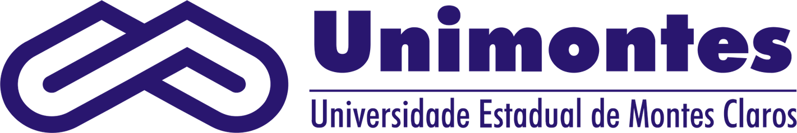
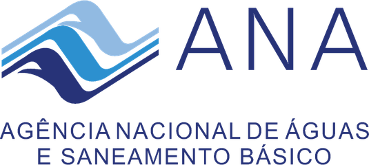
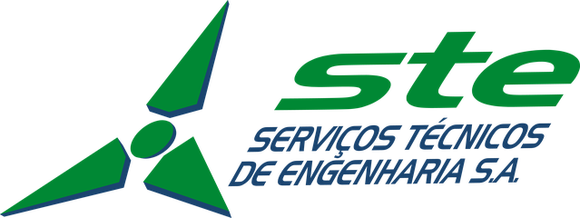
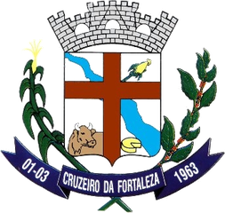
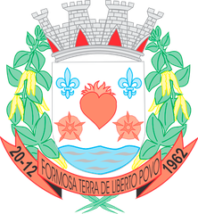
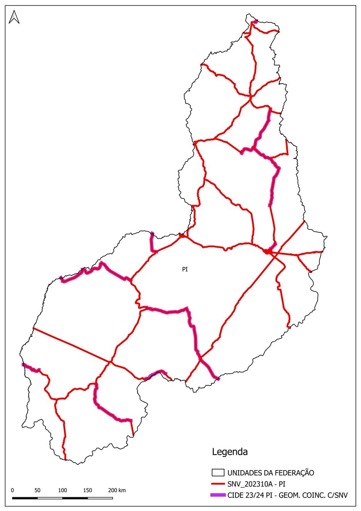
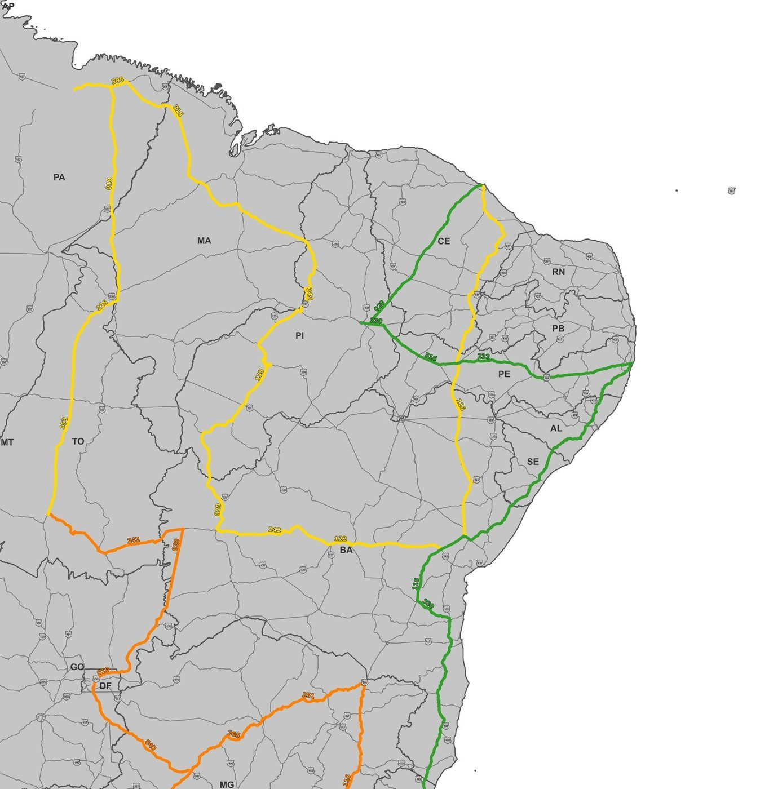
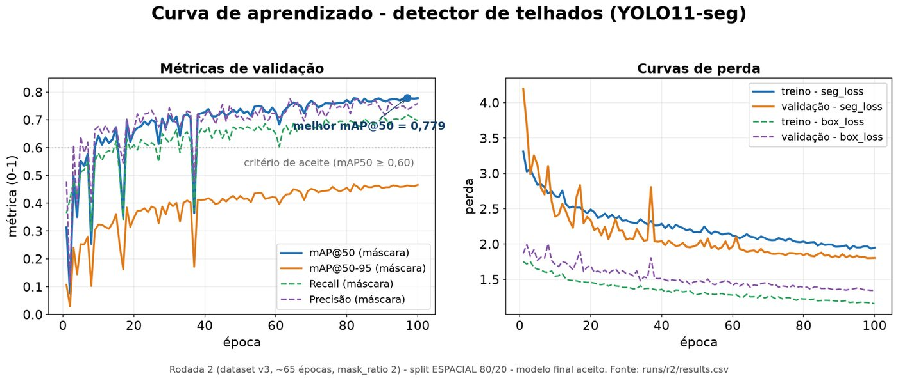
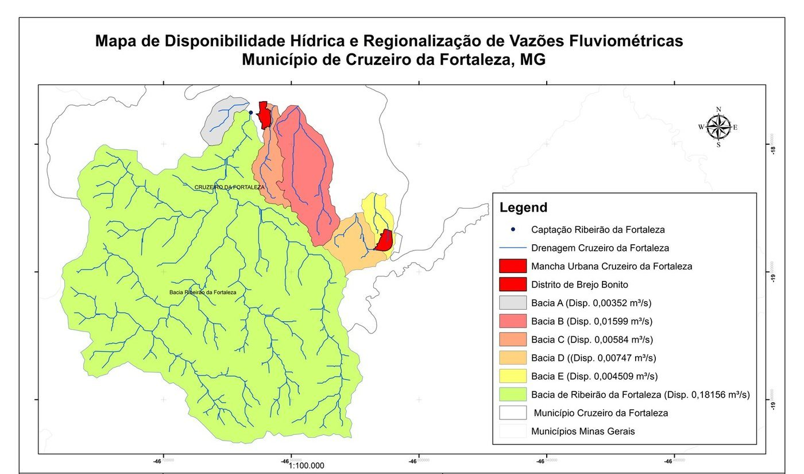

Detecting automated use in audit logs
Statistical usage profiles per user and per month, on a database I moved myself from Azure Data Explorer to a tuned MySQL.
1B+audit records processed and analyzed, 2023 to 2026
PhD in Science and Technology
Senior Data ScientistLLMAIMachine LearningGeoprocessingGeospatial AnalyticsR&DClimate ChangeMiningTransport Infrastructure
I design custom methods and solutions for complex data problems, when getting it wrong is costly.
My work starts where the conventional approach stops working.
Seeking: a full-time Senior Data Scientist role. Belo Horizonte, Brazil, or remote.
Public agencies and institutions


Companies

Municipalities served

Cruzeiro da Fortaleza
Lagoa FormosaAt Brazil's Federal Highway Police (PRF/DTIC), since January 2025, I have processed and analyzed over 1 billion audit records, I keep APIGEO in production serving the 13,758 locations of Projeto Mapear, and I audit a Databricks lakehouse with tables of up to 2 billion rows, including its natural language to SQL assistants.
For the Minas Gerais state government, I worked on the technical team of PELT-MG, the transport plan that analyzed an investment portfolio of over R$ 1 trillion through 2055. At DNIT, the federal transport infrastructure agency, I automated the 27 official Multimodal Maps and consolidated the 256,000 km network used for fuel tax sharing. Many of these ran in parallel.
I build and evaluate AI agents: tool-calling and RAG agents, guardrails, data isolation, LLM-as-judge and coding agent orchestration. I have worked with machine learning since 2015, hold a PhD from UFU, and my thesis method was filed as a patent application.
Patent application BR 10 2025 019783 9 (INPI, owned by UFU): crop yield prediction from satellite climate variables. See the application
My largest, highest-impact projects, for the Federal Highway Police, the Minas Gerais government, DNIT and UFU. Each case study shows the problem, the data, the approach and the result.
Statistical usage profiles per user and per month, on a database I moved myself from Azure Data Explorer to a tuned MySQL.
1B+audit records processed and analyzed, 2023 to 2026
Machine learning that predicts soybean production from satellite climate alone, with no weather station. UFU filed the method as a patent application.
Patent applicationBR 10 2025 019783 9 (INPI, owned by UFU), covering the thesis method
The API that places every Projeto Mapear location on the official network: highway, km, municipality and PRF unit, on datasets that update themselves.
13,758Projeto Mapear locations (11th edition, 2025/2026) served by APIGEO
The plan that ranks transport investment in Minas Gerais across six modes, from 2023 to 2055. I worked on CODEMGE's technical team.
R$ 1T+in the investment portfolio analyzed: 1,677 projects and 7,683 works
Technical audit of a layered lakehouse, review of data quality rules and acceptance testing of natural language assistants.
~2Brows in the largest tables I audit
I turned the production of Brazil's official transport maps into a database-driven atlas.
27 mapsofficial A0 sheets for every state and for Brazil, generated automatically from the database
An assistant that answers course questions with cited sources and authenticated grade and attendance lookup.
Pilotat Unimontes, with students using it on WhatsApp
A product for farming cooperatives that estimates field and farm yield from satellite and climate data, with an integrated AI agent: growers check the yield of each field and of the farm, plan the season and call in professionals registered by the cooperative, such as agronomists and veterinarians. Built on the method in the patent application.
Product in development
Instance segmentation of roofs to turn a municipal aerial survey into an urban inventory.
Inventoryof roofs and projected area per lot, generated automatically
A hypothesis borrowed from remote sensing: split the KV cache into bands and let the query choose which to keep.
7 of 7compression levels where the guided selector beat the static one on Qwen2.5-7B (perplexity)
DATASUS, sanitation plans, dams, cartography and all other projects are in the work history.
I build, evaluate and orchestrate AI agents in production and pilot settings, with safety designed into the system, not just the prompt.
Agents that query data through tools with closed contracts and answer with RAG, citing source, chapter and page. Bandit serves students on WhatsApp in a pilot at Unimontes.
Multi-tenant isolation with Row-Level Security, sensitive data kept out of the prompt, output filters and prompt injection defense.
Natural language to SQL assistants over Databricks Metric Views, validated against SQL ground truth and regression rounds.
Ground-truth sets, end-to-end tests with the real model, mutation tests, LLM-as-judge with rubrics and learned rules, and embedding model comparison.
Tender document analysis with long context, prefix caching, automatic fallback to a backup model and per-organization usage quotas.
Claude Code and Codex working in parallel under AGENTS.md contracts, custom skills and autonomous sessions that build, test and document.
Languages, tools and techniques I use, grouped by area.
Title, period and up to three highlighted achievements per role. The rest, and the projects from each phase, open right here.
Jan 2025 - present
Brasília, DF
Brazilian Federal Highway Police - PRF (Logiks TI)
Data Science, Artificial Intelligence and Integrations teams | Python, Java, JavaScript, SQL, AI, predictive analytics
As a specialized technical services contractor to PRF/DTIC, I work across the Data Science, AI and Integrations teams: statistical analysis at scale on audit logs, auditing a Databricks lakehouse, RAG corpus preparation and production services. Because this is a law enforcement agency, data, screens and system names are not shown.
13,758Projeto Mapear locations (11th edition, 2025/2026) served by APIGEO
~2Brows in the largest tables I audit
1B+audit records processed and analyzed, 2023 to 2026
A crash shows where risk has already materialized. Speeding shows where it is still latent. Looked at separately, each draws a different map. The lab uses open data only and answers one question: on which road segments do the two risks coincide?
The assistant looks up HR regulations using a RAG architecture on an on-premises generative AI platform. The collection came as PDFs, DOCX files, spreadsheets and images, with text corrupted during extraction. In legal RAG, broken text and repealed rules turn into wrong answers. My part was the corpus, not the application.
PRF exposes services through an API gateway with development, staging and production environments. Each new API arrives with its own backend, sometimes with custom authentication and more parameters than the consumer needs. Publishing without review can expose personal data.
It grew out of APIGEO: we needed to show the API answered correctly and held up under load. A load test alone measures how fast a possibly wrong answer comes back; validation without load misses connection exhaustion; and neither tells you whether throughput is headroom or ceiling without the database parameters.
2025 - 2026
Belo Horizonte, MG
CODEMGE - Companhia de Desenvolvimento de Minas Gerais (Minas Gerais State Development Company)
Minas Gerais State Logistics and Transport Plan (PELT-MG) | Python, SQL, logistics, GIS, predictive analytics
PELT-MG is the plan that guides where the state of Minas Gerais invests in roads, railways, airports, pipelines and waterways through 2055. I was the data scientist looking after the plan's PostgreSQL/PostGIS database: I digitized the project portfolio, ran the spatial analyses, loaded the data and kept it current. I also drafted the air cargo chapter proposal, built the airport-to-municipality link tables and consolidated the EFVM passenger time series. The network simulation, demand matrices and heat maps belong to the plan I helped build and were made by teammates.
R$ 1T+in the investment portfolio analyzed: 1,677 projects and 7,683 works
The plan compares very different kinds of works, so every project needs its geometry, attributes and link to the territory in one place. The database already existed when I joined in 2025. I took care of it from there: what goes in, how it goes in, and whether what comes out is right.

The plan's team assigned freight and passenger demand to Brazil's multimodal network in PTV Visum, starting from the 2023 baseline. With each scenario's portfolio added to the network, flows were reassigned for 2055: a counterfactual plus scenarios 1 to 4. The simulation is the plan's work, not mine.


The plan adapts the UK Treasury's Five Case Model. The ranking index combines the five dimensions through multiple linear regression, and the socioeconomic dimension uses impact indicators measured as the difference between each scenario and the counterfactual. The method and the ranking belong to the plan; the result published for consultation is preliminary.


The plan's freight matrix comes from electronic tax-invoice big data, with 49 commodity groups and 5,589 traffic zones. The passenger matrix comes from mobile-phone signals. Building and expanding the matrices was the plan team's work, and part of it predates my arrival.


The plan matches what regional workshops flagged as strategic against the commodity groups in the demand matrices. The routes those flows take on the network form the strategic freight corridors, and the report carries 35 corridor figures by commodity group. The corridor design is the plan's work.


A study by the plan's team, with its own section in the report. It is not my work.
A study by the plan's team: the state has 67 public airfields, and the classification followed the National Aviation Plan method. The classification is the team's; the air cargo part went through me.
2022 - 2025
Brasília, DF
National Department of Transport Infrastructure - DNIT (STE-SIMEMP)
Survey Planning Office (COLEP), Departamento Nacional de Infraestrutura de Transportes (Brazil's National Department of Transport Infrastructure)
For almost three years I looked after the geospatial base behind federal transport planning in Brazil: the National Road System (SNV), the official Multimodal Maps and the network used for traffic modeling in the national traffic count plan (PNCT). Much of that work is documented in technical notes I signed.
27 mapsofficial A0 sheets for every state and for Brazil, generated automatically from the database
Each state's paved road length is one of the criteria for sharing CIDE fuel-tax revenue (Law 10.336/2001). Every year COLEP receives a spreadsheet and, when available, vector data from each state, checks it against the federal SNV under the counting rules of Ordinance MT 197/2006 and tallies the kilometers that go on to TCU, the federal audit court.


PNCT, the national traffic count plan, estimates annual average daily traffic through modeling, and the model needs the capacity of every segment: single or dual carriageway, how many lanes, shoulder or not. DNIT's vector base did not carry that attribute for the whole network.


The 2024 waterway base arrived pre-processed, split into main and secondary stretches. To become SNV routes it had to be free of dangling nodes, duplicates and multipart geometries, and run in a single direction from the mouth upstream.


COLEP's products combine the SNV network with layers from other agencies: boundaries, hydrography, indigenous lands, quilombola territories, conservation units, ports. Without control over origin and version, a map can go out with stale data or at the wrong scale.


PNCT counts traffic at fixed stations and estimates daily volumes on the rest of the network through flow assignment. The model depends on a network with sound topology, connectors and capacity attributes. I worked on the plan's modeling by preparing that network and its modeling base.


Bills that name stretches of federal highways, bridges and overpasses are sent to DNIT for an opinion. COLEP checks whether the stretch exists, whether it already has a legal name and whether there is a conflict, which takes an up-to-date base of names and legislative status.
The SNV, Brazil's National Road System, changes several times a year. When a state road becomes federal, or a federal road is passed to a state, planners need to know what changed, since when and at which km. The technical answer comes from the SNV's historical series.

The LVC is the visual survey of pavement surface condition on federal highways, the input to the surface condition index (ICS). The data arrived as points with date, time, chainage and direction. The office needed to see where each crew had driven and measure the output of the cycle.

Every request at the office started the same way: find the right SNV release, cross it with another base and fill attributes by hand. I took those steps out of manual work, one at a time.


COLEP commissions field surveys in lots: iRAP star ratings, bridge inspections, TSD deflection surveys and traffic counts. Management needed to see on a single map where each front operates and what had already been surveyed.

2015 - present
Patos de Minas, MG
GFX GEO Soluções em Engenharia e Geociências (engineering and geoscience firm)
R&D in geoscience and data science; specialized services
I founded GFX GEO in 2015. It started as engineering and geoscience consulting for municipalities and mining (stream gauging, water availability, geochemical background) and is now where I turn methods into products: predictive models, computer vision and AI agents.
Pilotat Unimontes, with students using it on WhatsApp
Inventoryof roofs and projected area per lot, generated automatically
Lagoa Grande, in Minas Gerais and the São Francisco river basin, grew around a lake of about 20 hectares and has a history of street flooding. The city government hired GFX GEO to find out where the water runs, where it pools and what to fix first. The drone survey covers roughly 540 hectares.
Small municipalities in the Alto Paranaíba region of Minas Gerais have no gauging station on the streams that supply them. Without local measurements, low flows have to be estimated from larger stations. I ran this study for the PMSB (municipal sanitation master plans) of five municipalities, as a member of the technical coordination team and the person responsible for the water availability studies for urban supply.
Brazilian law requires every municipality to have a PMSB (Plano Municipal de Saneamento Básico, a master plan for water, sewage, solid waste and drainage) with a 20-year horizon. I worked on the plans for Carmo do Paranaíba, Cruzeiro da Fortaleza, Guimarânia, Lagoa Formosa, Presidente Olegário, São Gonçalo do Abaeté and Varjão de Minas. Those for Carmo do Paranaíba, Cruzeiro da Fortaleza, Lagoa Formosa, São Gonçalo do Abaeté and Varjão de Minas were commissioned by the CISPAR consortium (Alto Paranaíba) under an agreement with FEPAM/UNIPAM, a local university foundation, and together had about 67,000 residents in 2016.


Anyone selling to government has to find the right tender before the deadline, and tenders are scattered across PNCP (Brazil's national public procurement portal), Sistema S, BNDES, state portals and multilateral banks. I designed and built the whole platform: collection, database, search, API, frontend and security.
Old maps can become art, but the usual route is manual GIS work, one piece at a time. I built a pipeline where georeferencing is automatic and the look is calibrated by measurement, not by eye. The piece shown here is the Crater Lake sheet (USGS, 1956), which is in the public domain.


Carmo do Paranaíba had about 31,000 residents in 2016 and is supplied by three surface intakes plus wells. The plan had to say whether those sources can carry the town for the next 20 years.

Lagoa Formosa had about 18,000 residents in 2016. The town draws from a stream backed by a reservoir, already at the limit of its permitted flow.

A mining dam's emergency action plan needs to know how water behaves downstream: the shape of the channel, the vegetation that slows the flow and the discharge of each reach. That is what sets how far the flood extent goes and who lies in the self-rescue zone and the secondary zone. In February 2025 I did this work for the tailings dam at the Viga mine in Congonhas, Minas Gerais (Ferrous, now Vale), contracted by HidroBR through Sintezis (Patos de Minas).
Shops, services and health facilities such as pharmacies, clinics and practices need a waste management plan to comply with the law, and writing them one by one is expensive. Associations that support businesses, such as CDL and Sindcomércio, can offer it to their members at scale.
The tool grew out of the hydrological and urban drainage diagnosis I delivered through GFX GEO for Lagoa Grande, a town in Minas Gerais. The goal is to turn that hand-built study into a product: feed in a municipality's raw inputs and get the diagnosis automatically.

Every water study used to start from scratch: downloading wells, water permits, geology, hydrography and boundaries. GeoBase came out of a hydrogeological study, but I designed it as a company asset, organized by theme with a spatial catalog on top.
Water diagnoses, availability studies and risk analyses always started the same way: download datasets, clip, compute. I wrote a Python package parameterized by municipality and sorted the catalog's 33 products by how far each one can be automated.
Anyone doing epidemiology with Brazilian public health data runs into an archive that is not a database: compressed files split by state and month, no patient key, and naming conventions full of traps. Nobody knows the download cost up front.



2019 - 2022
Eurochem (Água e Terra Gestão Ambiental)
Specialized outsourced services
A mining company answers for any parameter above the legal limit. Where the geology is rich in metals, part of those concentrations is natural. A background study shows what comes from the rock and can support site-specific reference values. I did this work for a multinational fertiliser company at a phosphate mining complex in Minas Gerais.
A multinational fertiliser company had licence and water permit conditions to meet, which required flow monitoring on the streams around a phosphate mining complex in Minas Gerais. I coordinated the programme from the first stake in the ground to the final report.


2013 - 2023
Patos de Minas, MG
UNIPAM - Centro Universitário de Patos de Minas (university)
Undergraduate and technical education
UNIPAM, a university center in Patos de Minas, Minas Gerais, is where I earned my degree in environmental and sanitary engineering and where I worked in the lab before I had classes of my own. My first course was Applied Hydraulics, for the Agronomy program, in early 2015. Civil Engineering, Architecture, Chemical Engineering, Pharmacy and others came after.
I joined LABGEO, UNIPAM's geoprocessing lab, as an intern, worked as a teaching assistant for GIS, remote sensing and hydrology courses and, from 2014 to 2018, as lab technician, also supporting the Hydraulics and Chemical Engineering labs. The lab also carried out a study for the Ministério Público (the public prosecutor's office) on center-pivot irrigation in northwestern Minas Gerais.
Between 2013 and 2020 I published and supervised work at UNIPAM, nearly always with a map or with water somewhere in it. The PhD and the patent application, in 2025, close the series. The figures below come from Lattes, Brazil's academic CV platform.
2018 - 2023
Três Marias Reservoir River Basin Committee (CBH SF4)
Counting rule: each row is one workstream and the count is monthly. When the source only gives a year, the bar covers the whole year. GFX GEO counts as one continuous workstream; the larger contracts delivered through it have their own row. The 2026 products are not counted separately. Private clients are not named.
| Workstream | Period | Source and notes |
|---|---|---|
| UNIPAM: GIS lab and teaching | Jan 2013 to Jul 2023 | GIS lab 2013 to 2018; teaching Jan 2015 to Jul 2023 (Lattes CV) |
| GFX GEO, own consulting firm | Jan 2015 to present | Since 2015; first engineer-of-record filing in Feb 2016 |
| MPMG, state prosecution: irregular pivots | Jan 2015 to Dec 2016 | 2015 to 2016, approximate (CV) |
| Sanitation plans, CISPAR: 5 municipalities | Feb 2016 to Dec 2016 | Feb to Dec 2016 (engineer-of-record filing) |
| Master's, UFU | Jan 2016 to Aug 2018 | 2016 to Aug 2018 (Lattes CV; UFU repository) |
| SF4 River Basin Committee, board member | Aug 2018 to Mar 2023 | Aug 2018 to Mar 2023 (appointment published 9 Aug 2018) |
| PhD, UFU | Mar 2019 to Oct 2025 | Enrolled 20 Mar 2019; defended 20 Oct 2025 |
| Fertilizer multinational: stream gauging and background | Jun 2019 to Dec 2020; Jul 2021 to Dec 2021 | Stream gauging Jun 2019 to Dec 2020; geochemical background Jul to Dec 2021 |
| DNIT, federal transport agency | Jul 2022 to Apr 2025 | 7 Jul 2022 to 1 May 2025 (engineer-of-record filings) |
| Mining dams: emergency plan studies | Jul 2024 to Mar 2025 | Jul 2024 to Mar 2025 (field campaigns) |
| PRF/DTIC, federal highway police | Jan 2025 to present | Since Jan 2025 |
| CODEMGE: state transport plan (PELT-MG) | May 2025 to Jan 2026 | May 2025 to Jan 2026 |
| GFX GEO products: PIAT, Bandit, DATASUS and others | Jan 2026 to present | 2026; part of the GFX GEO front, not counted separately |
PhD and MSc at UFU, the patent application, and eight years of teaching as proof of communication.
The application was filed on 16 September 2025, with the Federal University of Uberlândia as owner. Its registered title translates as "Method for forecasting agricultural yield through automatic selection of climate variables derived from remote sensing". It is a filed application, not a granted patent, and the technical content only becomes public once INPI publishes it.
Patent applicationBR 10 2025 019783 9 (INPI, owned by UFU), covering the thesis method
Canola is a winter oilseed used for biodiesel, and Brazil had few suitability studies for it. In my dissertation I combined climate and soil data for an entire region of Minas Gerais, using 2014 as the base year and automatic INMET weather stations in four states, to show where the crop fits.


7 of 7compression levels where the guided selector beat the static one on Qwen2.5-7B (perplexity)
See certifications and complementary courses
Specializations and courses that complement my degrees, with their original titles.
I reply quickly by email and on LinkedIn. Or download the CV and reach out later.
Baixar CV (PDF, português)Download CV (PDF, English)LinkedIn